Next: The low mass transfer
Up: Low Mass Transfer Rates
Previous: Transport rate dependence on
Contents
A rational approximation
for low mass transfer rates
In the field equations,  enters only in the energy equation in the
factor
enters only in the energy equation in the
factor
![$[1-\exp(-\varPhi )]$](img715.png) , which has the Maclaurin series
, which has the Maclaurin series
and vanishes like 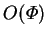.
From its definition (2.33), it is clear that for 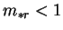,
only vanishes when the vapour mass fraction difference,  , does.
If this difference were zero, the buoyancy ratio,
, does.
If this difference were zero, the buoyancy ratio,  , would be too. Note
that can be expressed
, would be too. Note
that can be expressed
 |
 |
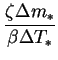 |
(6.8) |
| |
 |
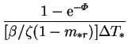 |
(6.9) |
| |
 |
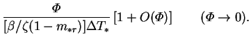 |
(6.10) |
It would be inappropriate to require to vanish in the low mass transfer
rate limit, however, since it is inversely proportional to
temperature difference,
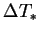. In applying the Boussinesq approximation
in chapter 2,
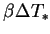 was assumed to be a small quantity.
Moreover, in applications, there will often be a direct link between the
temperature difference and the mass fraction difference, and so the mass
transfer rate factor.
In physical vapour
transport, for example, the vapour mass fraction difference is created by
differentially heating two opposing surfaces of pure solidified vapour
(Jhaveri & Rosenberger 1982). Indeed, quite generally, the
partial pressure of the vapour over the condensed phase will increase with
temperature, as may be quantified by Clapeyron's relation (Guggenheim 1959,
p. 148).
Consider, for example, an ideal saturated mixture: the limiting value
of the buoyancy ratio is (Close & Sheridan 1989)
where 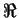 is the universal gas constant and 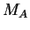 and 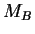 are the
molar masses of the vapour and gas, respectively. This limit is finite;
substituting in the properties of air and water vapour at 30 C,
for example, gives a limiting value of of 0.28,
which is hardly negligible compared to unity.
C,
for example, gives a limiting value of of 0.28,
which is hardly negligible compared to unity.
In the unsaturated case there is no such general
relation between and  . Nevertheless,
the buoyancy ratio, and any other
terms containing a similar ratio of and
should not be eliminated in the low mass transfer rate limit.
. Nevertheless,
the buoyancy ratio, and any other
terms containing a similar ratio of and
should not be eliminated in the low mass transfer rate limit.
Another example is furnished by the product
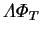, appearing
in the expression for the latent Nusselt number (2.68). It can
be expressed (cf. equation 4.32) as
or
which shows that,
by the rule established above,
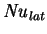 should be retained in the low mass
transfer rate limit. To take a numerical example, for humid air at
30C,
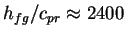K, which will make the denominator
of (6.13) small indeed.
In summary, the rational approximation for low mass transfer rates is obtained
by taking the limit
 with
with
| 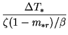 |
|
|
(6.14) |
| 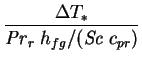 |
|
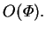 |
(6.15) |
Subsections
Next: The low mass transfer
Up: Low Mass Transfer Rates
Previous: Transport rate dependence on
Contents
Geordie McBain
2001-01-27